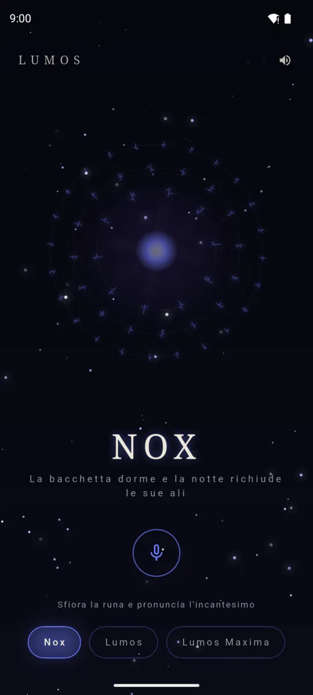
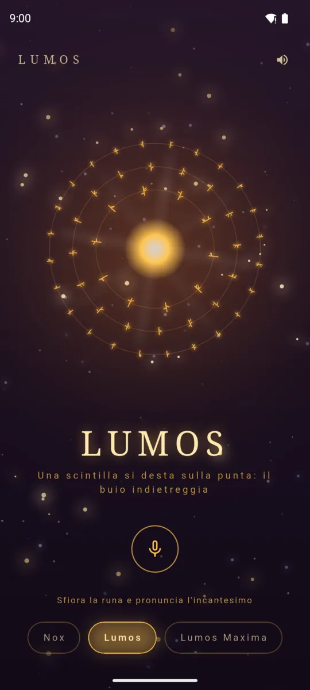
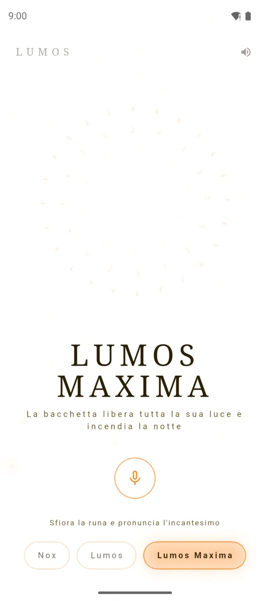

ItalianoEnglish
Say “Lumos” and a spark wakes at the tip. Whisper “Nox” and the night folds its wings again. And when the dark is too thick, call “Lumos Maxima”: the LED goes to full and the screen blazes white. Under the staging there is a serious torch, which comes on when you need it and puts itself out when you leave.

Nox: the wand sleeps. Night sky and dormant runes. 
Lumos: the LED comes on, and the runes light up with your voice. 
Lumos Maxima: all the light a phone can give.
Four spells, one light
- Nox — the wand sleeps. Night sky, dormant runes, no light.
- Lumos — the LED comes on: a warm, steady, everyday light.
- Lumos Maxima — LED at full, white screen, brightness at maximum. All the light a phone can give.
- Periculum — the LED flashes SOS in morse. A magical name for the most serious thing a torch can do: get you found. It lives in a place of its own, away from the tap that is looking for light in the dark.
Three ways to light it
- Your voice. Hands busy, hands full, pitch dark: just speak. It recognises the spells even said in a hurry, and plain words work too.
- A touch. A tap anywhere moves to the next spell, a long press takes everything back to Nox. No button to hunt for in the dark.
- Without opening anything. The Quick Settings tile turns the light on from the shade with the app closed, and there is a home-screen widget: a wand, a tap, light.
The wand is yours
Choose the core — unicorn hair, phoenix feather, dragon heartstring — and the colours change, and the shape of the runes, and the pitch of the sounds. Never the torch: that stays the same, serious, in every case. A sharp flick forward turns it on and one back turns it off, with a deliberately high threshold so the light does not start in your pocket. And there are spells written down nowhere.
What it asks for, and why
The camera only to switch on the LED flash — that is the permission Android keeps the torch behind — and the microphone only to listen for the spells. No recording is kept or sent anywhere, and without the microphone the app still works: touch and gesture remain.
Where to find it
Not public on Google Play yet. The link will appear here when it is.